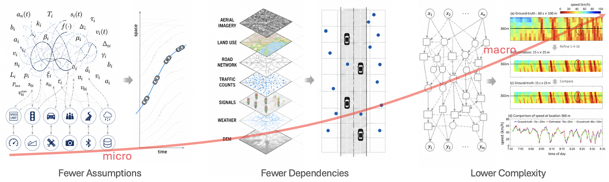
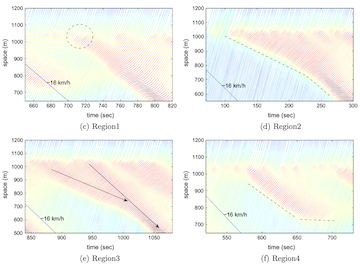
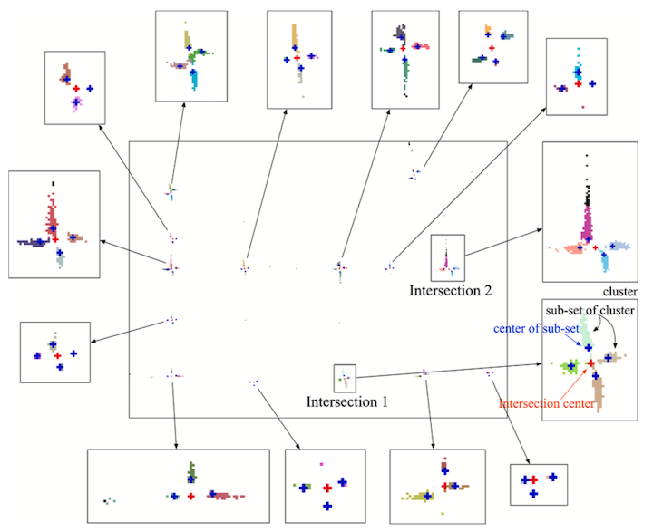
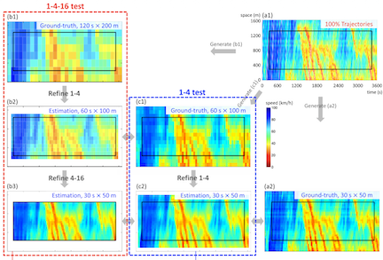

Occam's Razor: Simple Models for Traffic Dynamics
Overview
Occam's Razor is a principle of parsimony: when several explanations or methods can account for the same phenomenon, the one relying on fewer assumptions and less unnecessary complexity should be preferred.
The following three studies follow this principle in different ways. They seek to understand and represent traffic dynamics with fewer behavioral assumptions, fewer external data and software dependencies, and lower model complexity. Although developed for different problems, all three works share the same objective: to achieve sufficient explanatory, predictive, and practical value through simple and transparent methods.

Our work develops this idea through three studies:
- We developed a nonparametric car-following model based on a simple k-nearest-neighbor approach, reproducing empirical traffic dynamics without assuming driver-behavior parameters or a fundamental diagram[1]. More details.
- We proposed a mapping-to-cells method that extracts freeway traffic dynamics directly from probe vehicle data, without relying on GIS software, a digital map, or complicated map-matching tools[2], and developed its urban-road companion to identify turn-level intersection congestion across an entire network using only low-frequency probe vehicle data[3]. More details.
- We introduced a multiple linear regression model for refining time-space traffic diagrams, demonstrating that a transparent and readily applicable model can achieve promising accuracy and reliable transferability[4]. More details.
Publications



